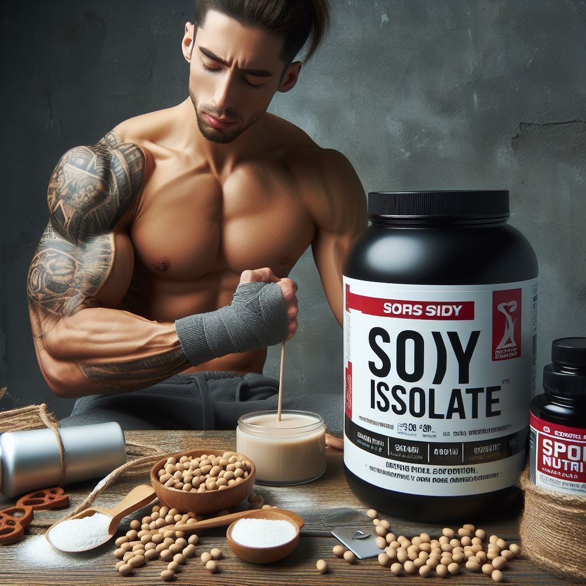

Соевый изолят
Соевый изолят — это продукт, получаемый из сои путем удаления из нее жира и углеводов. Он представляет собой белок, изолированный от других компонентов соевого зерна. Вот некоторая полезная информация о соевом изоляте:
1) Состав и применение:
- Соевый изолят содержит очень высокую концентрацию белка.
- Он широко используется в пищевой промышленности, а также в рационах спортсменов и вегетарианцев.
- Вещество прекрасно растворяется в воде и имеет нейтральный вкус.
2) Показания к применению:
- Изолят просто необходим тем, кто хочет быстро набрать мышечную массу.
- Оптимален он для спортсменов в период сушки.
- Также помогает тем, кто мечтает похудеть и поддерживать новую форму.
3) Преимущества и мифы:
- Соевый изолят — отличная альтернатива обычным белковым продуктам животного происхождения для вегетарианцев и тех, кто соблюдает строгий пост.
- Ставят под сомнение пользу пищевой добавки из-за ассоциации с генно-модифицированной соей, но она содержит много витаминов и микроэлементов.
Важно! Если вы планируете включить соевый изолят в свой рацион, обязательно проконсультируйтесь с врачом и тренером, чтобы выбрать подходящий продукт и дозировку. Помните, что индивидуальные потребности могут различаться, и важно следовать рекомендациям специалистов.
Теперь вы знаете больше о соевом изоляте! Если вас заинтересовал данный продукт, переходите по кнопке "Просмотр продукции" и подбирайте товар для себя!